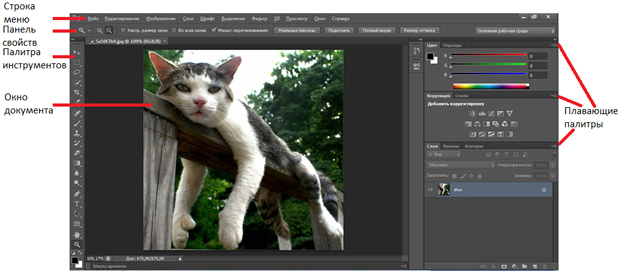
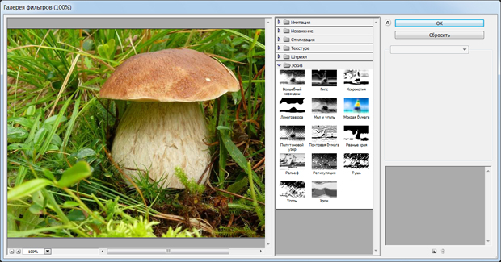
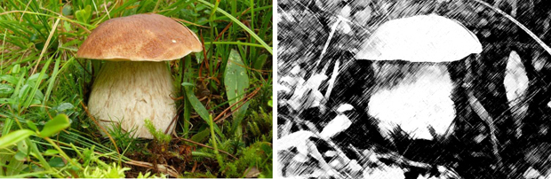
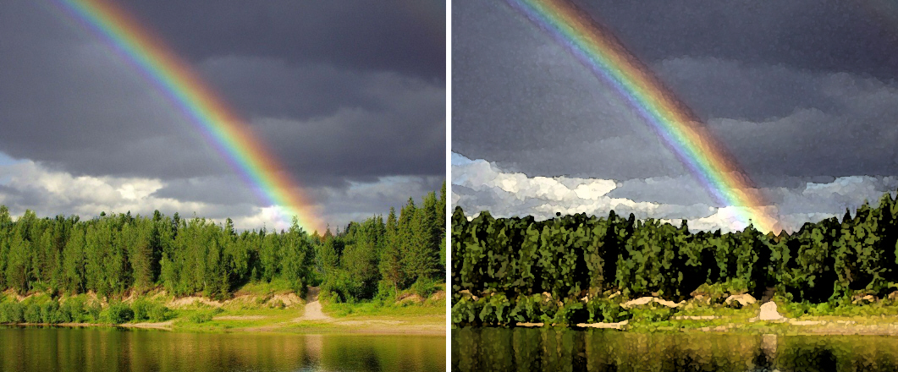
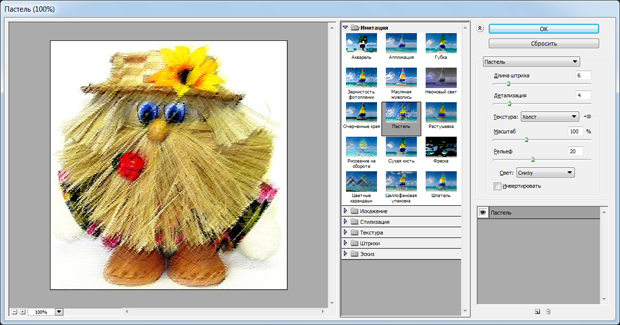
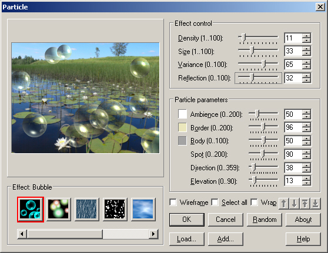
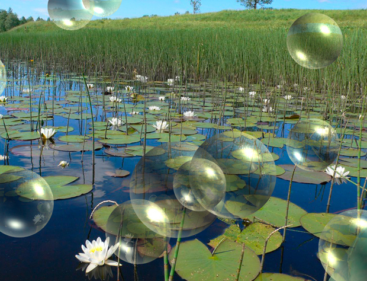

Лекция 1: Что такое Adobe Photoshop
Существует два типа программ для создания и обработки цифровых изображений - растровые и векторные. Наиболее известным представителем растровых программ является Adobe Photoshop. Он, главным образом, предназначен не для создания изображений, а для их обработки (редактировании) на компьютере (ПК). Например, на уже созданном изображении (чаще всего - фотографии) вы можете изменить резкость, цвет, повернуть, обрезать снимок и так далее. А вот векторные программы (например, CorelDRAW) служат, главным образом, для создания новых цифровых рисунков на ПК с нуля.
Данный курс посвящен одной из лучших современных растровых программ - Adobe Photoshop. Курс небольшой, поэтому мы не будем углубляться в тонкости этой программы, а будем изучать материал на конкретных примерах работы в этой программе.
Главное окно программы
На рис. 1.1 приведено главное окно программы Photoshop. Здесь обозначены не все, но основные, самые важные элементы интерфейса.
Новый термин
Что такое интерфейс? "Interface" в переводе с английского означает "inter" и "face" - между лицами. То есть это средство общения двух "лиц" - человека и компьютера. Графический интерфейс представляет собой совокупность средств и методов, при помощи которых пользователь взаимодействует с различными программами. В Photoshop взаимодействие человека с компьютером организуется с помощью различных пиктограмм, меню, диалоговых окон и так далее.
Рис. 1.1. Главное окно программы Photoshop
Примечание
Плавающими палитры называются потому, что их место не является фиксированным. Палитру можно разместить в любом месте экрана, а ее размер можно изменить простым растягиванием, перетаскиванием посредством мыши правого нижнего угла палитры.
С другими элементами главного окна мы будем знакомиться по мере выполнения различных практических упражнений. И начнем мы со знакомства с фильтрами Photoshop.
Пример 1. Превращаем фотографию в рисунок художника (Фильтры Photoshop)
Фильтр - инструмент для изменения изображения по определенным правилам, задаваемым этим фильтром. Под изменением может пониматься размытие изображения или его стилизация под живопись, изменение цветовой гаммы фотографии и многое другое. Все фильтры представлены в соответствующем меню Фильтр.
Новый термин
Фильтр - это алгоритм обработки изображения для получения того или иного результата.
Эскиз
Для того, чтобы познакомиться с группой фильтров Эскиз выполните команду Фильтр-Галерея фильтров и раскройте список из 14 фильтров этой группы ( рис. 1.2).
Рис. 1.2. Галерея фильтров Photoshop
Фильтры группы Эскиз - служат для создания различных художественных эффектов в изображении. В частности, с помощью данного фильтра изображение можно стилизовать фотоснимок под рисунок углем, тушью и так далее. Командой Файл-Открыть загрузите в Photoshop какую-либо фотографию, а затем выполните команду Фильтр-Галерея фильтров-Эскиз-Уголь-ОК ( рис. 1.3).
Рис. 1.3. Исходное изображение (слева) и стилизованное под рисунок углем (справа)
Имитация
Если фильтры группы Эскиз в основном дают стилизацию под рисунок в градациях серого, то фильтры группы Имитация формируют из фотографий цветные рисунки, похожие на рисунки художника акварельными красками. Командой Файл-Открыть загрузите в Photoshop какую-либо фотографию, а затем выполните команду Фильтр-Галерея фильтров-Имитация-Акварель-ОК ( рис. 1.4).
Рис. 1.4. Исходное фото для работы (слева) стилизовано под рисунок акварельными красками (справа)
В этой же группе фильтров Имитация вы можете изменить фотографию под другие творческие стили художников, например, имитировать пастель или фресковую живопись. Обратите также внимание на то, что параметры каждого из фильтров можно настраивать ( рис. 1.5).
Рис. 1.5. Для домовенка выбран фильтр пастель, имеющий 7 настроек
Подключаемые внешние фильтры (плагины)
Различные производители программ выпускают различные внешние фильтры (их также называют подключаемые модули или плагины), которые можно подключить к Photoshop. Такие внешние фильтры представляют собой дополнительные программы, позволяющие расширить возможности основной программы. Дополнительные фильтры хранятся в файлах с расширением *.8bf. Чтобы подключить такой плагин-фильтр к Adobe Photoshop достаточно скопировать его файл в каталог …Program Files\Adobe\Adobe Photoshop CS6\Plug-ins. При каждом запуске программа Photoshop просматривает свой каталог Plug-ins и регистрирует обнаруженные там файлы плагинов. После этого плагины становятся доступны в меню фильтров Adobe Photoshop. Как пример, давайте рассмотрим Ulead Particle Plugin. Этот плагин (фильтр) предназначен для создания различных эффектов в виде мыльных пузырей, дождя и снега, эффектов облаков, сигаретного дыма, огня и звезд. Для каждого выбранного эффекта имеется возможность варьировать количество, размеры, уровень светового отражения и другие параметры. Выбор эффекта и изменения параметров отображаются в реальном времени. При установке программы укажите правильный путь для плагина …Program Files\Adobe\Adobe Photoshop\Plug-ins. Вызов установленного плагина осуществляется командой Фильтр-Ulead Effects-Particle - рис. 1.6 и 1.7.
Рис. 1.6. Фильтр, создающий на изображении мыльные пузыри
Рис. 1.7. Пример применения фильтра Ulead Particle Plugin